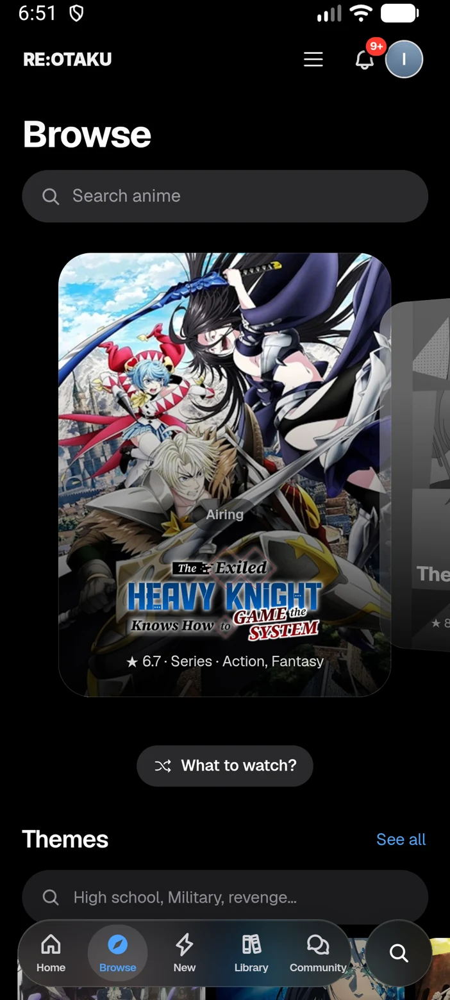
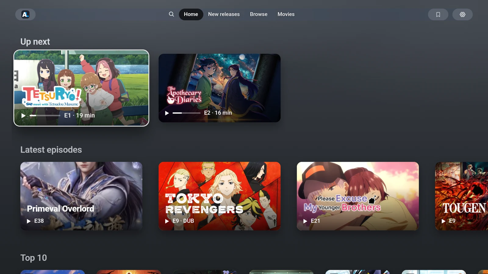
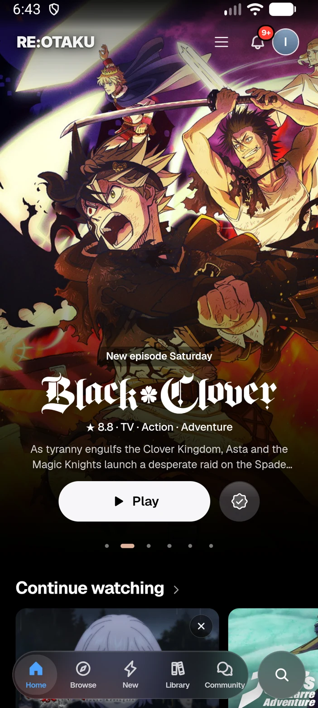

Less searching. More discovering.
New releases, genres, and recommendations. Follow your curiosity to your next show.

The RE:OTAKU betav2.4.2
That next episode. That new favourite. All in an app made for your phone and your TV.
Free beta. Android 7 or later. No account required.


Find a show, explore its cast, and save your next favourite. RE:OTAKU keeps the good stuff close.
New releases, genres, and recommendations. Follow your curiosity to your next show.

Save what catches your eye and return to your episodes. Connect AniList to bring your tracking along.
Seven interface languages, audio selection, and subtitle tools. Availability depends on each source and episode.
A big-screen experience with remote navigation, clear focus, and performance settings. No touchscreen needed.
Navigate with the arrows. Select with OK. Return with Back.
The TV build is about 2.2 MiB. A dedicated download for the big screen.
Performance settings reduce visual effects on devices with fewer resources.
No concepts. No invented screens. Just the app.
Select a screenshot to enlarge it. Some features vary by device and source.
An app that respects how you want to watch.
Choose your profile, avatar, and preferences. Shape your experience from the first launch.
Return to what you were watching and organise your library. AniList sign-in is optional.
Playback controls, episode selection, and subtitle tools, right inside the app.
The app lets you know when a new version is ready. Read the changes and verify every download on GitHub.
A few things to help you get started.
The current beta is free to download. You can explore the app without creating an account.
Android phones and Android TV running Android 7 or later. Choose the build for your device below. If the phone build is not compatible with your device, try the larger universal APK.
Download the matching APK, open it, and follow Android’s install prompt. You may need to allow installations from the browser or file manager you used. On TV, open this website in Downloader and choose Android TV.
Yes. Use the AniList option inside the app to sign in and connect your tracking. AniList is optional; it is not required to explore RE:OTAKU.
Streams, dubs, and subtitle tracks come from third-party sources. Their availability can vary by title, season, episode, and selected source. Subtitle translation also requires a working connection and service.
Open a GitHub issue with your device model, Android version, app version, and steps to reproduce the problem. Please leave out passwords and other private information.
Already tried it? Tell us how it feels.
No reviews yet.

Pick your screen. Make it yours.
For your phone
Download APKv2.4.2 · 26.6 MiBFor your big screen
Download TV APKv2.4.2 · 2.2 MiBDownload requests, not verified installs. One record per browser and platform per day.